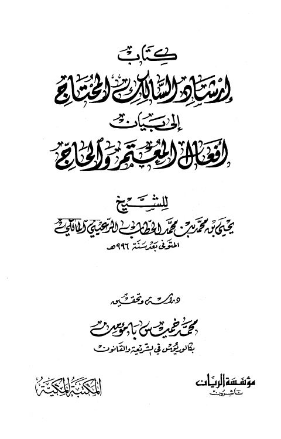

Downloads need an internet connection.
إرشاد السالك المحتاج إلى بيان أفعال المعتمر والحاج
Authors: يحيى بن محمد بن محمد الحطاب الرعيني المالكي
Editors: محمد خميس بامؤمن
Publishers: مؤسسة الريان المكتبة المكية
**▫️ العنوان: إرشاد السالك المحتاج إلى بيان أفعال المعتمر والحاج** ▪️ المؤلف: #يحيى_بن_محمد_بن_محمد_الحطاب_الرعيني_المالكي ▫️ المحقق: #محمد_خميس_بامؤمن ▪️ الناشر: #مؤسسة_الريان • #المكتبة_المكية ▫️ تاريخ النشر: 1431هـ 2010 م ▪️ بلد النشر: بيروت، #لبنان • مكة المكرمة، #السعودية ▫️ الطبعة: 1 ▪️ عدد الأجزاء: 1 ▫️ الصفحات: 394 ▪️ نوع الوعاء: #كتاب ▫️ التصنيف الرئيسي: #الفقه_وأصوله ▪️ التصنيف الفرعي: #بحوث_ومسائل_المناسك ۪